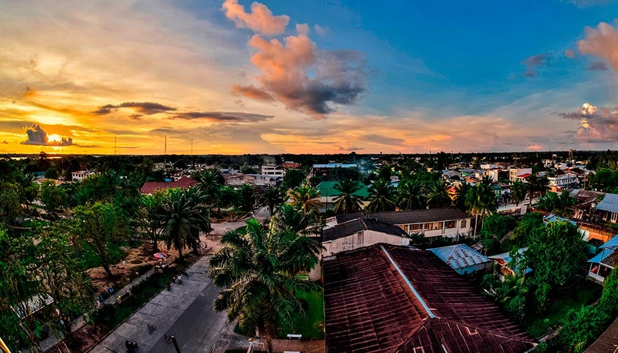
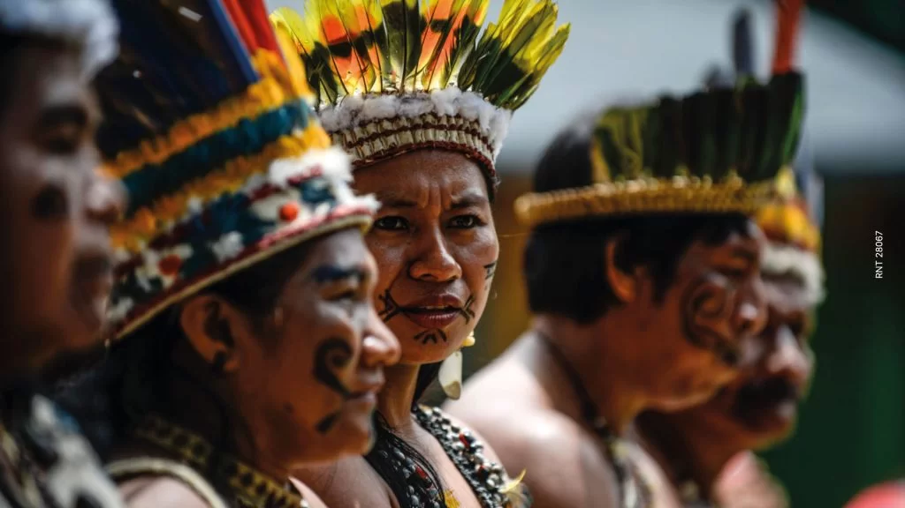
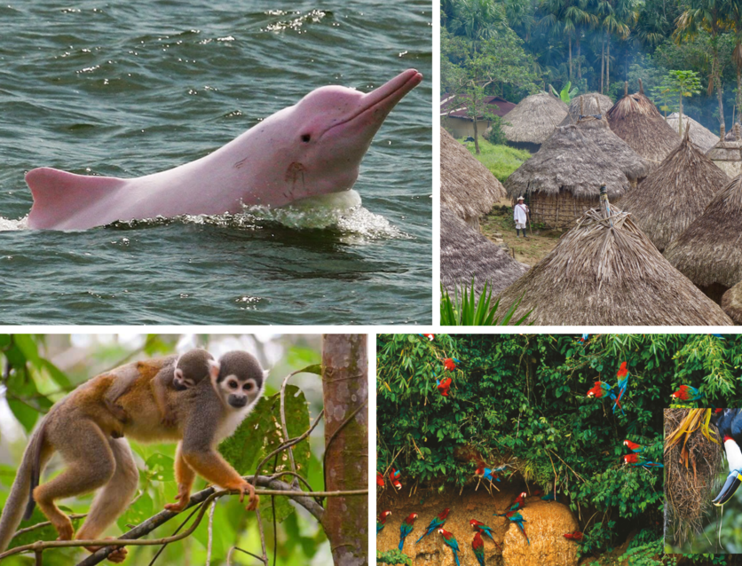

Amazonas es el departamento más extenso de Colombia, con una superficie de aproximadamente 110,000 km², pero también es uno de los menos poblados, con unos 83,808 habitantes en 2023. Se encuentra en el extremo sur del país, en la región de la Amazonia, limitando con Brasil y Perú, y es conocido por su vasta selva tropical, que forma parte de la cuenca del río Amazonas, uno de los sistemas fluviales más importantes y biodiversos del mundo.
Su capital es Leticia, una ciudad ubicada en la triple frontera entre Colombia, Brasil y Perú. Leticia es un importante centro turístico y económico de la región, además de ser la única ciudad con infraestructura significativa. Otras áreas pobladas son pequeñas localidades y comunidades indígenas dispersas a lo largo de los ríos.


El Amazonas alberga diversas comunidades indígenas, como los Ticuna, Yagua, y Huitoto, quienes tienen un profundo conocimiento del entorno natural y mantienen tradiciones ancestrales. Estas comunidades juegan un papel clave en la preservación del patrimonio cultural y ecológico del departamento.
El turismo es uno de los sectores económicos más importantes del departamento. Los visitantes pueden explorar la selva amazónica, realizar excursiones fluviales por el río Amazonas, y participar en actividades como la observación de fauna (delfines, aves, monos, etc.) y la visita a comunidades indígenas para conocer sus costumbres y tradiciones.
